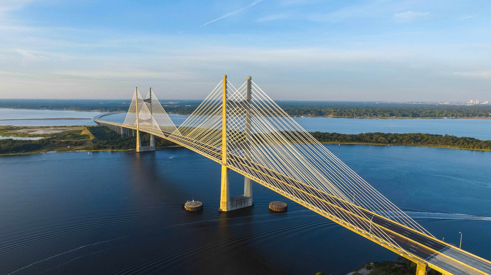
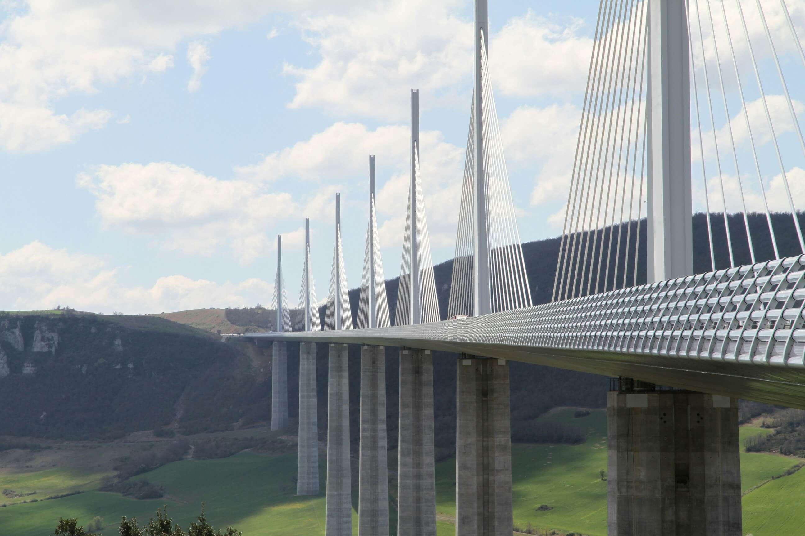
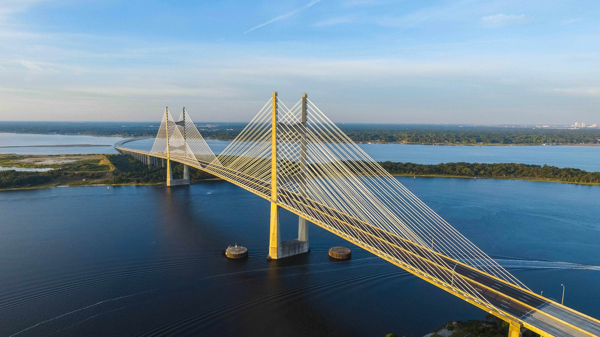
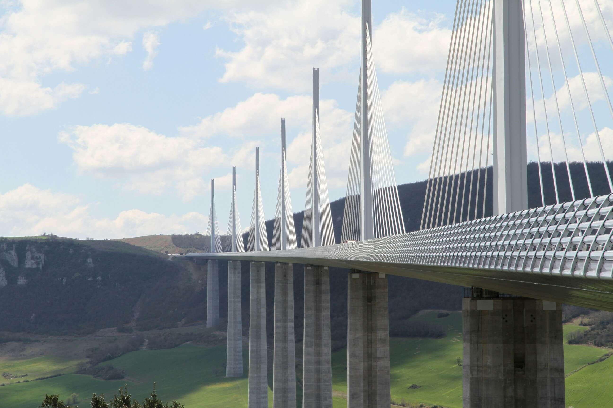
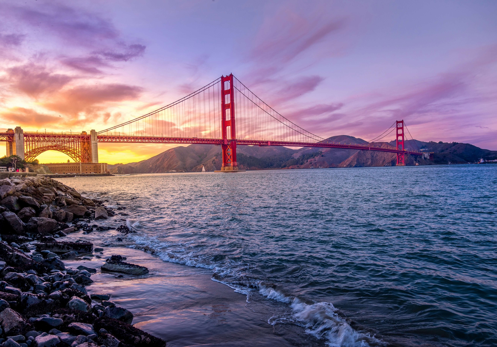
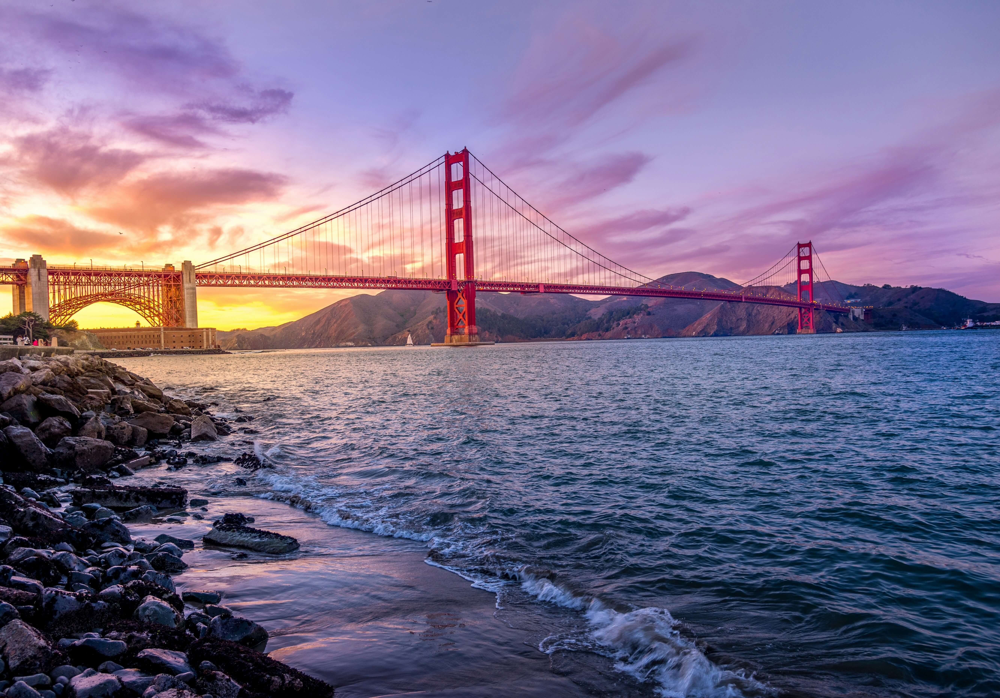
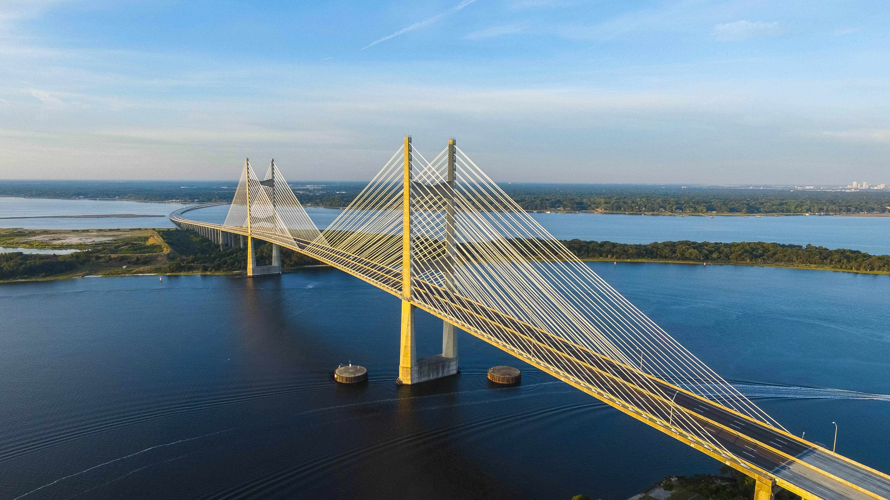
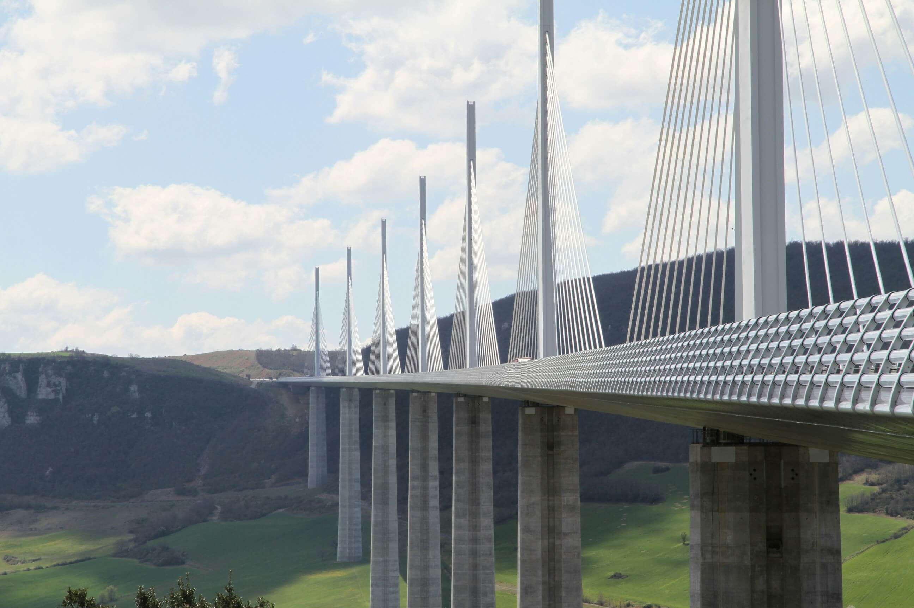
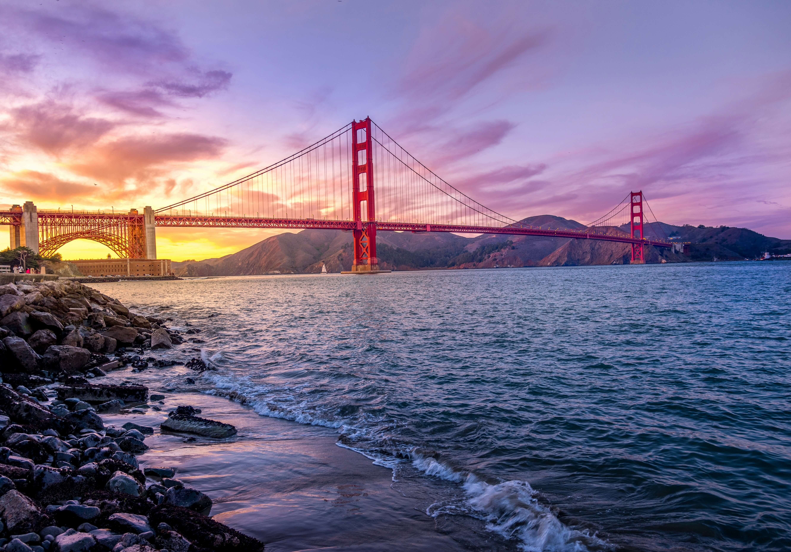

 

| Strona Główna | Most Akashi Kaikyō | Most Hong Kong-Zhuhai-Macau | Most Golden Gate | Kontakt |
Odkryj najbardziej imponujące mosty na całym świecie. Od najdłuższych po najpiękniejsze, mosty te są nie tylko kluczowymi połączeniami komunikacyjnymi, ale także świadectwem ludzkiej inżynierii i kreatywności.



Kliknij w menu powyżej, aby dowiedzieć się więcej o tych niesamowitych mostach!